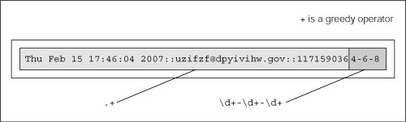
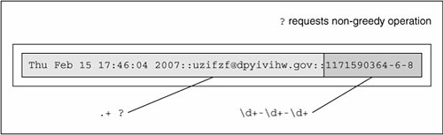

15.4. Regular Expressions ExampleWe will now run through an in-depth example of the different ways of using regular expressions for string manipulation. The first step is to come up with some code that actually generates some random (but-not-so-random) data on which to operate. In Example 15.2, we present gendata.py, a script that generates a data set. Although this program simply displays the generated set of strings to standard output, this output may very well be redirected to a test file. Example 15.2. Data Generator for RE Exercises (gendata.py)
This script generates strings with three fields, delimited by a pair of colons, or a double-colon. The first field is a random (32-bit) integer, which is converted to a date (see the accompanying Core Note). The next field is a randomly generated electronic mail (e-mail) address, and the final field is a set of integers separated by a single dash ( - ). Running this code, we get the following output (your mileage will definitely vary) and store it locally as the file redata.txt: Thu Jul 22 19:21:19 2004::izsp@dicqdhytvhv.edu::1090549279-4-11 Sun Jul 13 22:42:11 2008::zqeu@dxaibjgkniy.com::1216014131-4-11 Sat May 5 16:36:23 1990::fclihw@alwdbzpsdg.edu::641950583-6-10 Thu Feb 15 17:46:04 2007::uzifzf@dpyivihw.gov::1171590364-6-8 Thu Jun 26 19:08:59 2036::ugxfugt@jkhuqhs.net::2098145339-7-7 Tue Apr 10 01:04:45 2012::zkwaq@rpxwmtikse.com::1334045085-5-10 You may or may not be able to tell, but the output from this program is ripe for regular expression processing. Following our line-by-line explanation, we will implement several REs to operate on these data, as well as leave plenty for the end-of-chapter exercises. Line-by-Line ExplanationLines 16In our example script, we require the use of multiple modules. But since we are utilizing only one or two functions from these modules, rather than importing the entire module, we choose in this case to import only specific attributes from these modules. Our decision to use from-import rather than import was based solely on this reasoning. The from-import lines follow the Unix startup directive on line 1. Line 8doms is simply a set of higher-level domain names from which we will randomly pick for each randomly generated e-mail address. Lines 1012Each time gendata.py executes, between 5 and 10 lines of output are generated. (Our script uses the random.randint() function for all cases where we desire a random integer.) For each line, we choose a random integer from the entire possible range (0 to 231 - 1 [sys.maxint]), then convert that integer to a date using time.ctime(). System time in Python and most Unix-based computers is based on the number of seconds that have elapsed since the "epoch," midnight UTC/GMT on January 1, 1970. If we choose a 32-bit integer, that represents one moment in time from the epoch to the maximum possible time, 232 seconds after the epoch. Lines 1422The login name for the fake e-mail address should be between 4 and 7 characters in length. To put it together, we randomly choose between 4 and 7 random lowercase letters, concatenating each letter to our string one at a time. The functionality of the random.choice() function is given a sequence, return a random element of that sequence. In our case, the sequence is the set of all 26 lowercase letters of the alphabet, string.lowercase. We decided that the main domain name for the fake e-mail address should be between 4 and 12 characters in length, but at least as long as the login name. Again, we use random lowercase letters to put this name together letter by letter. Lines 2425The key component of our script puts together all of the random data into the output line. The date string comes first, followed by the delimiter. We then put together the random e-mail address by concatenating the login name, the "@" symbol, the domain name, and a randomly chosen high-level domain. After the final double-colon, we put together a random integer string using the original time chosen (for the date string), followed by the lengths of the login and domain names, all separated by a single hyphen. 15.4.1. Matching a StringFor the following exercises, create both permissive and restrictive versions of your REs. We recommend you test these REs in a short application that utilizes our sample redata.txt file above (or use your own generated data from running gendata.py). You will need to use it again when you do the exercises. To test the RE before putting it into our little application, we will import the re module and assign one sample line from redata.txt to a string variable data. These statements are constant across both illustrated examples. >>> import re
>>> data = 'Thu Feb 15 17:46:04 2007::uzifzf@dpyivihw.gov::1171590364-6-8'In our first example, we will create a regular expression to extract (only) the days of the week from the timestamps from each line of the data file redata.txt. We will use the following RE: "^Mon|^Tue|^Wed|^Thu|^Fri|^Sat|^Sun" This example requires that the string start with ("^" RE operator) any of the seven strings listed. If we were to "translate" the above RE to English, it would read something like, "the string should start with "Mon," "Tue,"..., "Sat," or "Sun." Alternatively, we can bypass all the carat operators with a single carat if we group the day strings like this: "^(Mon|Tue|Wed|Thu|Fri|Sat|Sun)" The parentheses around the set of strings mean that one of these strings must be encountered for a match to succeed. This is a "friendlier" version of the original RE we came up with, which did not have the parentheses. Using our modified RE, we can take advantage of the fact that we can access the matched string as a subgroup: >>> patt = '^(Mon|Tue|Wed|Thu|Fri|Sat|Sun)'
>>> m = re.match(patt, data)
>>> m.group() # entire match
'Thu'
>>> m.group(1) # subgroup 1
'Thu'
>>> m.groups() # all subgroups
('Thu',)This feature may not seem as revolutionary as we have made it out to be for this example, but it is definitely advantageous in the next example or anywhere you provide extra data as part of the RE to help in the string matching process, even though those characters may not be part of the string you are interested in. Both of the above REs are the most restrictive, specifically requiring a set number of strings. This may not work well in an internationalization environment where localized days and abbreviations are used. A looser RE would be: "^\w{3}." This one requires only that a string begin with three consecutive alphanumeric characters. Again, to translate the RE into English, the carat indicates "begins with," the "\w" means any single alphanumeric character, and the "{3}" means that there should be 3 consecutive copies of the RE which the "{3}" embellishes. Again, if you want grouping, parentheses should be used, i.e., "^(\w{3})": >>> patt = '^(\w{3})'
>>> m = re.match(patt, data)
>>> if m is not None: m.group()
...
'Thu'
>>> m.group(1)
'Thu'Note that an RE of "^(\w){3}" is not correct. When the "{3}" was inside the parentheses, the match for three consecutive alphanumeric characters was made first, then represented as a group. But by moving the "{3}" outside, it is now equivalent to three consecutive single alphanumeric characters: >>> patt = '^(\w){3}'
>>> m = re.match(patt, data)
>>> if m is not None: m.group()
...
'Thu'
>>> m.group(1)
'u'The reason why only the "u" shows up when accessing subgroup 1 is that subgroup 1 was being continually replaced by the next character. In other words, m.group(1) started out as "T," then changed to "h," then finally was replaced by "u." These are three individual (and overlapping) groups of a single alphanumeric character, as opposed to a single group consisting of three consecutive alphanumeric characters. In our next (and final) example, we will create a regular expression to extract the numeric fields found at the end of each line of redata.txt. 15.4.2. Search versus Match, and Greediness tooBefore we create any REs, however, we realize that these integer data items are at the end of the data strings. This means that we have a choice of using either search or match. Initiating a search makes more sense because we know exactly what we are looking for (set of three integers), that what we seek is not at the beginning of the string, and that it does not make up the entire string. If we were to perform a match, we would have to create an RE to match the entire line and use subgroups to save the data we are interested in. To illustrate the differences, we will perform a search first, then do a match to show you that searching is more appropriate. Since we are looking for three integers delimited by hyphens, we create our RE to indicate as such: "\d+-\d+-\d+". This regular expression means, "any number of digits (at least one, though) followed by a hyphen, then more digits, another hyphen, and finally, a final set of digits." We test our RE now using search(): >>> patt = '\d+-\d+-\d+' >>> re.search(patt, data).group() # entire match '1171590364-6-8' A match attempt, however, would fail. Why? Because matches start at the beginning of the string, the numeric strings are at the rear. We would have to create another RE to match the entire string. We can be lazy though, by using ".+" to indicate just an arbitrary set of characters followed by what we are really interested in: patt = '.+\d+-\d+-\d+' >>> re.match(patt, data).group() # entire match 'Thu Feb 15 17:46:04 2007::uzifzf@dpyivihw.gov::1171590364- 6-8' This works great, but we really want the number fields at the end, not the entire string, so we have to use parentheses to group what we want: >>> patt = '.+(\d+-\d+-\d+)' >>> re.match(patt, data).group(1) # subgroup 1 '4-6-8' What happened? We should have extracted "1171590364-6-8," not just "4-6-8." Where is the rest of the first integer? The problem is that regular expressions are inherently greedy. That means that with wildcard patterns, regular expressions are evaluated in left-to-right order and try to "grab" as many characters as possible which match the pattern. In our case above, the ".+" grabbed every single character from the beginning of the string, including most of the first integer field we wanted. The "\d+" needed only a single digit, so it got "4", while the ".+" matched everything from the beginning of the string up to that first digit: "Thu Feb 15 17:46:04 2007::uzifzf@dpyivihw.gov::117159036", as indicated below in Figure 15-2. Figure 15-2. Why our match went awry: + is a greedy operatorOne solution is to use the "don't be greedy" operator, "?". It can be used after "*", "+", or "?". This directs the regular expression engine to match as few characters as possible. So if we place a "?" after the ".+", we obtain the desired result illustrated in Figure 15-3. >>> patt = '.+?(\d+-\d+-\d+)' >>> re.match(patt, data).group(1) # subgroup 1 '1171590364-6-8' Figure 15-3. Solving the greedy problem: ? requests non-greedinessAnother solution, which is actually easier, is to recognize that "::" is our field separator. You can then just use the regular string strip('::') method and get all the parts, then take another split on the dash with strip('-') to obtain the three integers you were originally seeking. Now, we did not choose this solution first because this is how we put the strings together to begin with using gendata.py! One final example: let us say we want to pull out only the middle integer of the three-integer field. Here is how we would do it (using a search so we don't have to match the entire string): "-(\d+)-". Trying out this pattern, we get: >>> patt = '-(\d+)-' >>> m = re.search(patt, data) >>> m.group() # entire match '-6-' >>> m.group(1) # subgroup 1 '6' We barely touched upon the power of regular expressions, and in this limited space we have not been able to do them justice. However, we hope that we have given an informative introduction so that you can add this powerful tool to your programming skills. We suggest you refer to the documentation for more details on how to use REs with Python. For more complete immersion into the world of regular expressions, we recommend Mastering Regular Expressions by Jeffrey E. F. Friedl. |